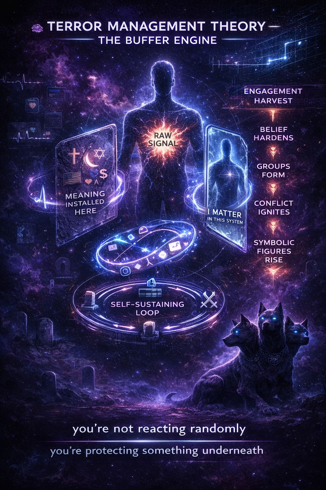

“Humans don’t just fear death… they organize reality to avoid feeling it.”
TMT starts with one unbearable contradiction:
That clash creates a constant background pressure:
👉 existential anxiety
So the system builds a workaround:
Humans construct psychological shields to keep death anxiety out of conscious awareness:
You’re not just reacting to content online.
You’re protecting your existence buffer.
TMT doesn’t need you thinking about death directly.
It slips in sideways.
Even subtle cues work:
Once activated, the system tightens:
People cling harder to beliefs:
“This is right. That is wrong.”
“Us vs them” sharpens. Outsiders feel threatening.
Aggression rises toward those who challenge identity buffers.
Not random. Protective.
Influencers, leaders, ideologies, and symbols can become:
👉 immortality anchors
TMT isn’t just fear → reaction.
It is:
🪦 Death anxiety in the background
⬇
🧱 Identity reinforcement
⬇
⚔️ Conflict with other identities
⬇
📡 More reminders of instability
⬇
🪦 Back to anxiety
👉 Self-sustaining loop
This is where the Outrage Industry locks in.
Platforms amplify:
Why?
👉 Because existentially activated humans engage more.
Outrage isn’t random.
It is:
🧠 existential anxiety
➡️ routed through identity
➡️ expressed as moral conflict
➡️ harvested as engagement
People think:
👉 “They’re just angry / stupid / evil.”
Reality:
👉 They’re defending a worldview that keeps death anxiety contained.
That doesn’t make harmful behavior okay.
But it makes it predictable.
You don’t fight TMT directly.
You de-escalate the system it’s operating through:
Slow the reaction. No instant identity lock.
Ask:
“What actually happened?”
versus
“What does this mean about me, us, or them?”
Multiple selves are more stable than one rigid self.
Reduce threat without requiring dominance.
If we put this in the IPT universe:
👉 The Hellhound doesn’t attack the crowd.
👉 It smells the signal underneath the panic.
It recognizes:
“This isn’t about the post…
this is about what the post threatens inside them.”
TMT says:
Humans don’t just want to live.
They need to feel like their life means something beyond death.
And when that meaning feels threatened: